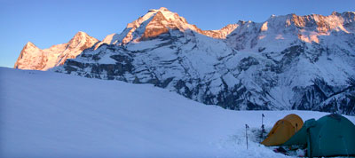
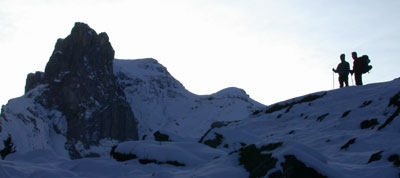

Het Lord of the Rings gevoel
donderdag 30 oktober 2003 | Reisverhalen
Ahhh, wat deed dat alweer deugd! Vijf dagen met tent en rugzak door de sneeuw ploeteren in de Alpen (Berner Oberland) om zo nu en dan uit je sokken geslagen te worden door een adembenemend panorama.
Het was wel even spannend. Geen van ons vieren wist precies welke tol de ijskoude bergnachten gingen eisen. Ik kan jullie nu echter met een gerust gemoed vertellen dat zelfs -15°C zonder noemenswaardige problemen te overbruggen valt.
Geniet even mee van ons kort fotografisch verslag. Het Lord of the Rings gevoel is er nooit veraf.


Chapo op 30 oktober 2003
Zalige foto's die me toch ook even laten wegdromen ...